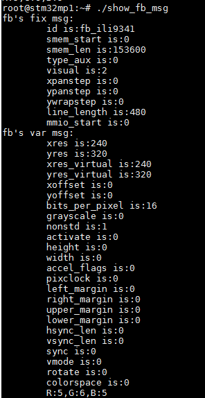
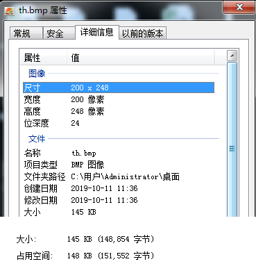
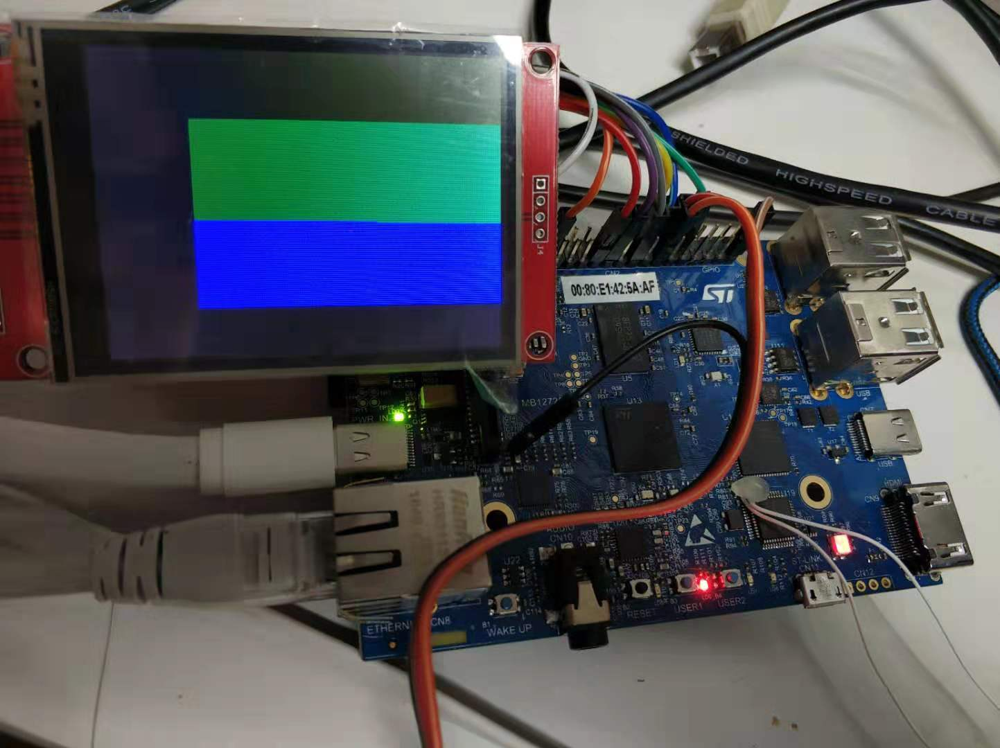
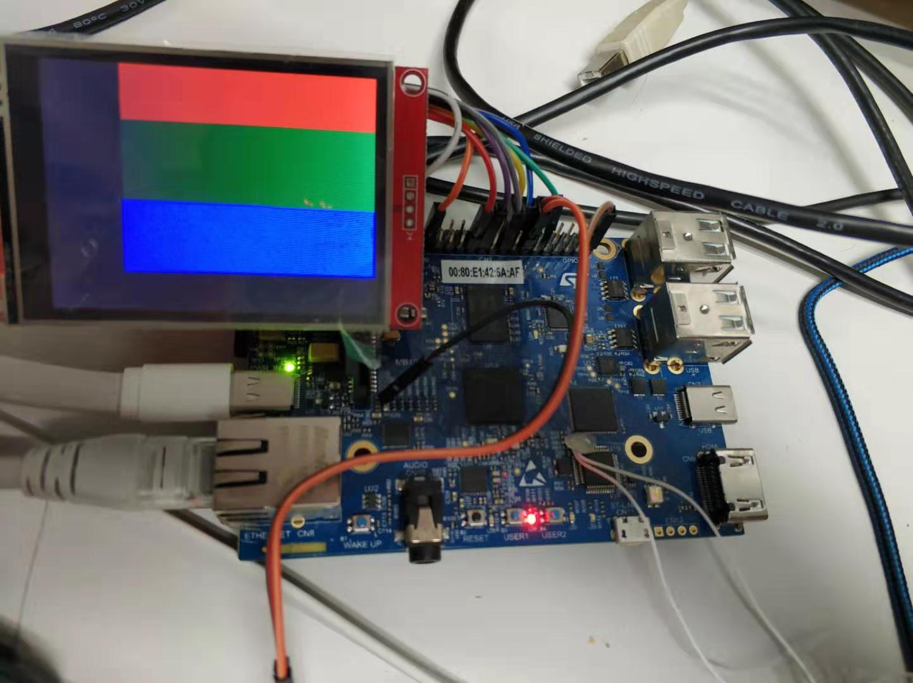
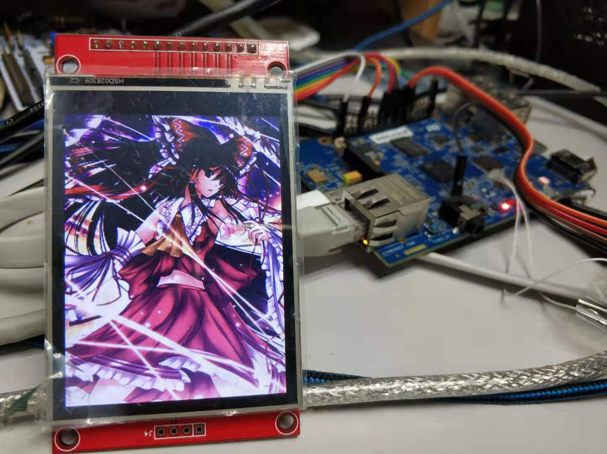
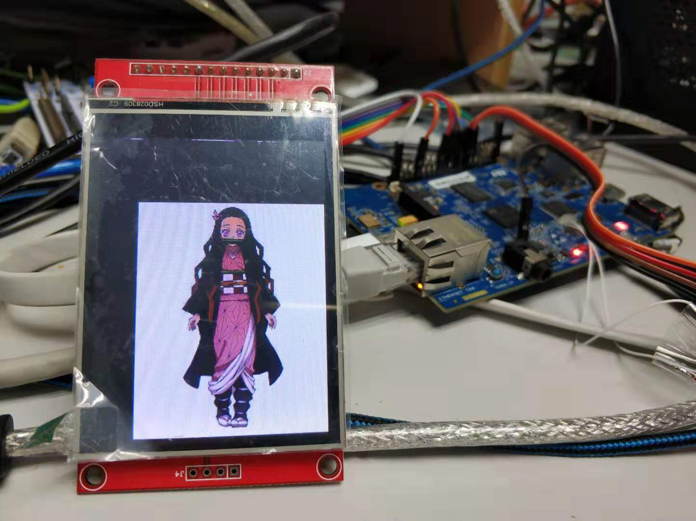
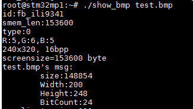

fbtft使用的是framebuffer框架，这种框架将显示设备抽象为帧缓冲区，对framebuffer设备（/dev/fbx(0、1、2..)）进行相关操作可以反应到LCD上。
现在尝试下在用户空间用C来操作LCD设备。
获取参数
要对framebuffer进行操作，首先要知道所操作设备的相关参数，Linux在用户空间提供了两个跟framebuffer参数相关的结构体（在文件fb.h中）:
- fb_fix_screeninfo
struct fb_fix_screeninfo {
char id[16]; /* identification string eg "TT Builtin" */
unsigned long smem_start; /* Start of frame buffer mem */
/* (physical address) */
__u32 smem_len; /* Length of frame buffer mem */
__u32 type; /* see FB_TYPE_* */
__u32 type_aux; /* Interleave for interleaved Planes */
__u32 visual; /* see FB_VISUAL_* */
__u16 xpanstep; /* zero if no hardware panning */
__u16 ypanstep; /* zero if no hardware panning */
__u16 ywrapstep; /* zero if no hardware ywrap */
__u32 line_length; /* length of a line in bytes */
unsigned long mmio_start; /* Start of Memory Mapped I/O */
/* (physical address) */
__u32 mmio_len; /* Length of Memory Mapped I/O */
__u32 accel; /* Indicate to driver which */
/* specific chip/card we have */
__u16 capabilities; /* see FB_CAP_* */
__u16 reserved[2]; /* Reserved for future compatibility */
};
- fb_var_screeninfo
struct fb_var_screeninfo {
__u32 xres; /* visible resolution */
__u32 yres;
__u32 xres_virtual; /* virtual resolution */
__u32 yres_virtual;
__u32 xoffset; /* offset from virtual to visible */
__u32 yoffset; /* resolution */
__u32 bits_per_pixel; /* guess what */
__u32 grayscale; /* 0 = color, 1 = grayscale, */
/* >1 = FOURCC */
struct fb_bitfield red; /* bitfield in fb mem if true color, */
struct fb_bitfield green; /* else only length is significant */
struct fb_bitfield blue;
struct fb_bitfield transp; /* transparency */
__u32 nonstd; /* != 0 Non standard pixel format */
__u32 activate; /* see FB_ACTIVATE_* */
__u32 height; /* height of picture in mm */
__u32 width; /* width of picture in mm */
__u32 accel_flags; /* (OBSOLETE) see fb_info.flags */
/* Timing: All values in pixclocks, except pixclock (of course) */
__u32 pixclock; /* pixel clock in ps (pico seconds) */
__u32 left_margin; /* time from sync to picture */
__u32 right_margin; /* time from picture to sync */
__u32 upper_margin; /* time from sync to picture */
__u32 lower_margin;
__u32 hsync_len; /* length of horizontal sync */
__u32 vsync_len; /* length of vertical sync */
__u32 sync; /* see FB_SYNC_* */
__u32 vmode; /* see FB_VMODE_* */
__u32 rotate; /* angle we rotate counter clockwise */
__u32 colorspace; /* colorspace for FOURCC-based modes */
__u32 reserved[4]; /* Reserved for future compatibility */
};
这两个参数都可以通过ioctl获得，首先定义3个变量，一个是打开的fb设备的句柄，剩下2个分别是fb_var_screeninfo、fb_fix_screeninfo：
int fbfd = 0;
struct fb_var_screeninfo vinfo;
struct fb_fix_screeninfo finfo;
打开fb设备：
fbfd = open("/dev/fb0", O_RDWR);
if (!fbfd)
{
printf("Error: cannot open framebuffer device.\n");
exit(1);
}
然后分别获取两个结构体，并在main函数中调用：
if (ioctl(fbfd, FBIOGET_FSCREENINFO, &finfo))
{
printf("Error reading fixed information.\n");
exit(2);
}
if (ioctl(fbfd, FBIOGET_VSCREENINFO, &vinfo))
{
printf("Error: reading variable information.\n");
exit(3);
}
创建两个函数分别输出这两个结构体元素：
void show_fb_fix_info(struct fb_fix_screeninfo info)
{
printf("fb's fix msg:\n");
printf("\tid is:%s\n",info.id);
printf("\tsmem_start is:%d\n",info.smem_start);
printf("\tsmem_len is:%d\n",info.smem_len);
printf("\ttype_aux is:%d\n",info.type_aux);
printf("\tvisual is:%d\n",info.visual);
printf("\txpanstep is:%d\n",info.xpanstep);
printf("\typanstep is:%d\n",info.ypanstep);
printf("\tywrapstep is:%d\n",info.ywrapstep);
printf("\tline_length is:%d\n",info.line_length);
printf("\tmmio_start is:%d\n",info.mmio_start);
}
void show_fb_var_info(struct fb_var_screeninfo info)
{
printf("fb's var msg:\n");
printf("\txres is:%d\n",info.xres);
printf("\tyres is:%d\n",info.yres);
printf("\txres_virtual is:%d\n",info.xres_virtual);
printf("\tyres_virtual is:%d\n",info.yres_virtual);
printf("\txoffset is:%d\n",info.xoffset);
printf("\tyoffset is:%d\n",info.yoffset);
printf("\tbits_per_pixel is:%d\n",info.bits_per_pixel);
printf("\tgrayscale is:%d\n",info.grayscale);
printf("\tnonstd is:%d\n",info.nonstd);
printf("\tactivate is:%d\n",info.activate);
printf("\theight is:%d\n",info.height);
printf("\twidth is:%d\n",info.width);
printf("\taccel_flags is:%d\n",info.accel_flags);
printf("\tpixclock is:%d\n",info.pixclock);
printf("\tleft_margin is:%d\n",info.left_margin);
printf("\tright_margin is:%d\n",info.right_margin);
printf("\tupper_margin is:%d\n",info.upper_margin);
printf("\tlower_margin is:%d\n",info.lower_margin);
printf("\thsync_len is:%d\n",info.hsync_len);
printf("\tvsync_len is:%d\n",info.vsync_len);
printf("\tsync is:%d\n",info.sync);
printf("\tvmode is:%d\n",info.vmode);
printf("\trotate is:%d\n",info.rotate);
printf("\tcolorspace is:%d\n",info.colorspace);
}
编译、拷贝到目标板上，运行结果如下： 
从上面运行结果看，成功的获取了屏的一系列参数。
详细代码：framebuffer/show_fb_msg.c
填充颜色
现在试下给整个屏填充颜色，要填充屏的话，需要几个参数，一个是framebuffer所需内存的大小，一个是屏的像素的个数，还有就是颜色深度。
要对framebuffer进行操作首先需要做的是通过mmap进行地址映射，这里就要用到framebuffer所需内存的大小，framebuffer所需内存的大小可以从fb_fix_screeninfo获得，如下：
static char *fbp = 0;
fbp = (char *)mmap(0, finfo.smem_len, PROT_READ | PROT_WRITE, MAP_SHARED, fbfd, 0);
if ((int)fbp == -1)
{
printf("Error: failed to map framebuffer device to memory.\n");
exit(4);
}
这里申请一段finfo.smem_len大小的连续内存，对这段内存进行操作就会反应到屏上了。
对整个屏进行填充就是操作屏上的所有像素（也可以说遍历所有像素），这里就需要知道屏幕的像素的个数，这个参数可以从之前获取到的fb_var_screeninfo中的参数中的xres，yres。从fb.h中的注释翻译过来，xres，yres是可见分辨率，我理解为可见区域，应该就是对应屏幕显示区域的大小了。
int screensize = 0;
screensize = xres * yres;
还有一个很关键的参数颜色深度（bpp：bits per pixel），也就是表示一个像素颜色所需的位数（bit），一般来说有这么几种：1位，8位，16位，24位，32位。，比如1位的屏，也就是单色屏，用1bit来表示颜色，如果是白色单色屏的话，0表示黑色，1表示白色。24bit屏，就是用24bit（3字节）表示颜色，也就是RGB888，R、G、B分别占8bit。
从上面获取到的参数知道，该屏是16bit的，也就是RGB565，用两个字节表示。应为之前用mmap申请的内存是char指针，用该指针来操作像素的话不方便，索性就把char型转成short型，如下：
short *fb_s;
fb_s = (short *)fbp;
定义4个宏，分别表示红色、绿色、蓝色、黑色，
#define RED 0xf800
#define GREEN 0x07e0
#define BLUE 0x001f
#define BLACK 0x0000
创建一个写framebuffer内存的函数，如下：
void fill_screen(short *fb_men,short color,int pix_size)
{
for(int i=0;i<pix_size;i++)
{
*fb_men = color;
fb_men ++;
}
}
第一个参数是所要操作的framebuffer对应的内存，第二个是所要填充的颜色，第三个是屏幕的尺寸，然后就可以对屏幕进行填充了，如下：
printf("Fill red\n");
fill_screen(fb_s,RED,screensize/2);
sleep(1);
printf("Fill green\n");
// fb_s = (short *)fbp;
fill_screen(fb_s,GREEN,screensize/2);
sleep(1);
printf("Fill blue\n");
// fb_s = (short *)fbp;
fill_screen(fb_s,BLUE,screensize/2);
sleep(1);
fill_screen(fb_s,BLACK,screensize/2);
上面的代码是先填充红色，等待1秒，然后是绿色、蓝色，最后填充黑色（清屏）。效果如下：

详细代码：framebuffer/fb_fill_color.c
显示图片
现有的图片格式非常多，JPEG、TIFF、PNG、BMP，SVG等等，这些又分有压缩、无压缩。这里是为了学习如何操作framebuffer，就选择一种无压缩格式的格式的图片来操作。可以直接以二进制的方式读取图片数据，然后显示到屏上。比较常用的无压缩的图片是BMP，这里就选择BMP格式的图片。
BMP格式图片数据有以下4部分组成：
- 位图头文件数据结构，它包含BMP图像文件的类型、显示内容等信息；
- 位图信息数据结构，它包含有BMP图像的宽、高、压缩方法，以及定义颜色等信息；
- 调色板，这个部分是可选的，有些位图需要调色板，有些位图，比如真彩色图（24位的BMP）就不需要调色板；
- 位图数据，这部分的内容根据BMP位图使用的位数不同而不同，在24位图中直接使用RGB，而其他的小于24位的使用调色板中颜色索引值。
由以上信息可以知道24位的bmp图片，数据部分就是图片像素的数据，也就是说读取24位bmp图片的数据部分不用进行任何操作，就可以直接拿来用，所以这里选择使用24bit的BMP图片，以下是我用来测试的24bit图片中的一张图片的信息：

BMP文件的位图头跟位图信息部分占BMP图片数据的前54字节，24位BMP图片的图片数据部分就是剩下的所有数据了（第55字节开始）。要对BMP图片的位图数据进行读，还需要几个关键参数，所读的图片的宽、高。还有颜色深度（bpc）,因为选用了24位的图片，颜色深度算是已近知道了。
获取BMP图片信息
首先获取BMP图片的信息，定义个结构体：
typedef struct
{
uint16_t bfType;
uint32_t bfSize;
uint32_t biWidth;
uint32_t biHeight;
uint16_t biBitCount;
}BMP_HEADER;
这个结构体里面的元素分别有图片类型，图片数据大小，图片的尺寸跟颜色深度。
创建个获取该结构图的函数：
BMP_HEADER TFTBmpGetHeadInfo(uint8_t *buf)
{
BMP_HEADER bmpHead;
bmpHead.bfType = (buf[0] << 8) + buf[1];
bmpHead.bfSize = (buf[5]<<24) + (buf[4]<<16) + (buf[3]<<8) + buf[2];
bmpHead.biWidth = (buf[21]<<24) + (buf[20]<<16) + (buf[19]<<8) + buf[18];
bmpHead.biHeight = (buf[25]<<24) + (buf[24]<<16) + (buf[23]<<8) + buf[22];
bmpHead.biBitCount = (buf[29] << 8) + buf[28];
return bmpHead;
}
打开图片并读取前54字节，传给函数TFTBmpGetHeadInfo，然后判断图片格式是否为BMP，颜色深度是否为24bit，不是的话，程序不再继续运行：
bmp_fd = open(argv[1], O_RDWR);
if(bmp_fd <0)
{
printf("open file faile\n");
}
if(read(bmp_fd,buffer,54) <0)
{
printf("read file \"%s\" faile\n",argv[1]);
return -1;
}
bmp_header = TFTBmpGetHeadInfo(buffer);
printf("%s's msg:\n",argv[1]);
printf("\ttype:%2x\n",bmp_header.bfType);
printf("\tsize:%d\n",bmp_header.bfSize);
printf("\tWidth:%d\n",bmp_header.biWidth);
printf("\tHeight:%d\n",bmp_header.biHeight);
printf("\tBitCount:%d\n",bmp_header.biBitCount);
if(bmp_header.bfType != 0x424d)
{
printf("The picture is not bmp file\n");
return -1;
}
if(bmp_header.biBitCount != 24)
{
printf("Just support 24bit bmp file\n");
return -1;
}
把图片显示到屏上
我这里实现的方法是，每次读取BMP图片的一行就写到Framebuffer对应的缓存中，虽然要求read读取指定个字节，可是程序运行的时候并不是每次都能够读取所要求的字节数。所以还需要加个判断，判断每次读取的字节数是否为达到要求，没达到要求就继续读，知道达到要求为止。具体代码如下：
int perline_size = bmp_header.biWidth * bmp_header.biBitCount /8;
char * readed_data = (char *)malloc(perline_size);
int i=0;
int line_count=0;
int read_size = perline_size;
int read_count=0;
int read_per_line=0;
int buf_offset=0;
while((ret = read(bmp_fd,readed_data+buf_offset,read_size)) !=0)
{
if(ret == -1)
{
if(errno == EINTR)
continue;
perror("read");
break;
}else if(ret !=perline_size )
{
read_per_line += ret;
read_size = perline_size - read_per_line;
buf_offset = read_per_line;
}else
read_per_line = ret;
if(read_per_line == perline_size)
{
read_size = perline_size;
buf_offset =0;
read_per_line = 0;
if(bits_per_pixel ==16)
{
short pixl = 0;
if(screan_width > bmp_header.biWidth)
{
for(i=0;i<bmp_header.biWidth;i++)
{
short blue = (readed_data[i*3]>>3) & 0x001f;
short green = (readed_data[i*3+1]>>2) & 0x003f;
short red = (readed_data[i*3+2]>>3) & 0x001f;
pixl = (red << 11 ) + (green << 5) + blue;
*fb_s = pixl;
fb_s ++;
}
fb_s += screan_width -bmp_header.biWidth ;
}else if(screan_width <= bmp_header.biWidth)
{
for(i=0;i<screan_width;i++)
{
short blue = (readed_data[i*3]>>3) & 0x001f;
short green = (readed_data[i*3+1]>>2) & 0x003f;
short red = (readed_data[i*3+2]>>3) & 0x001f;
pixl = (red << 11 ) + (green << 5) + blue;
*fb_s = pixl;
fb_s ++;
}
}
}
}
line_count++;
if(line_count >= screan_height)
break;
}
这里还涉及到一个问题，由于使用的图片是24bit的，显示屏使用的却是16位的，那就需要把24bit转成16bit了，在做之前就有想过，转换的时候是取高位还是低位呢？一开始，我是取低位的，代码为：
short blue = (readed_data[i*3]) & 0x001f;
short green = (readed_data[i*3+1]) & 0x003f;
short red = (readed_data[i*3+2]) & 0x001f;
pixl = (red << 11 ) + (green << 5) + blue;
*fb_s = pixl;
fb_s ++;
显示一张有红、绿、蓝色块的图片：

红色显示有问题，正常的如下：

还有显示一些其他图片的：

显示可爱的祢豆子：

最后附上一张显示图片时输出的信息：

详细代码：show_bmp.c